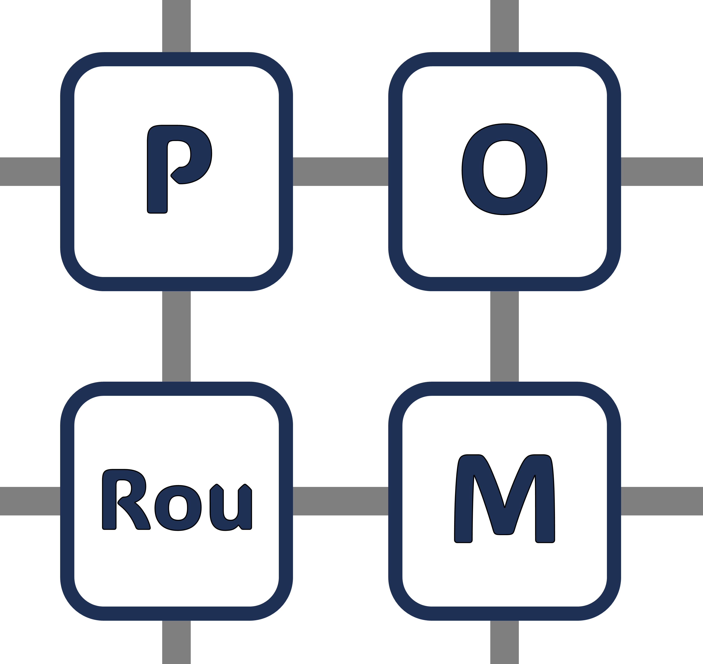

P.O.Rou.M. Parallel offline routing on the mesh Παράλληλη offline δρομολόγηση σε πλέγμα
Executes 3 greedy permutations.
Protects the queue size with an offline routing trick before executing them.
Εκτελεί 3 άπληστες μεταθέσεις.
Προστατεύει το μέγεθος ουρών με ένα τρικ offline δρομολόγησης πριν την εκτέλεσή τους.
Splits the mesh into quadrants and performs offline routing on them to achieve the queue bound. Χωρίζει το πλέγμα σε τεταρτημόρια και κάνει offline δρομολόγηση σε αυτά για να επιτύχει το όριο ουράς.